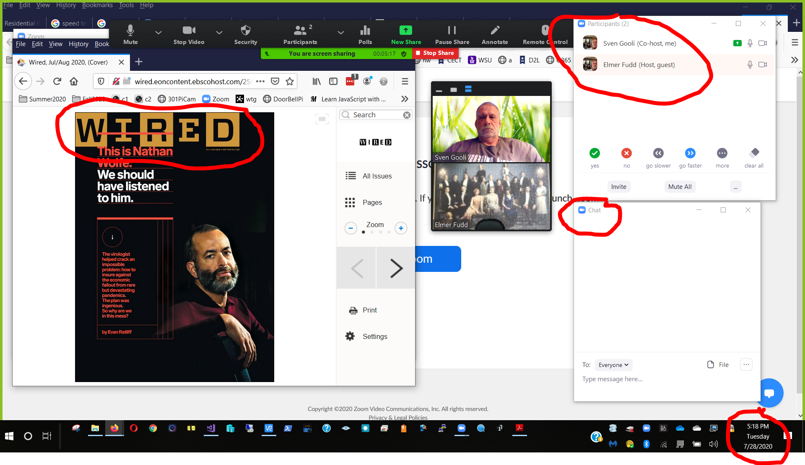

After completing this assignment you will be able to use a computer to
The purpose of this assignment is to learn to use and leverage the Internet to allow communications between geographically dispersed groups. Microsoft Teams, Zoom, email and text messaging are tools that can help you creatively communicate. Some considerations are:
This assignment will cover several basic collaboration methods, you are encouraged to explore on your own to find additional features that will make your life and present or future jobs easier.
The exercises in this assignment can be done in any order.
OneNote is used to organize evidence before submission, mirroring how professionals collect artifacts for audits, reporting, and troubleshooting.
Ctrl + V
Please realize that not all exercises require screenshots.
Conference Calls
Make sure you have Microsoft Teams installed on your laptop. You already have an account, see the link above for login information.
For this assignment set up a Microsoft Teams web conference call involving members of your D2L Summative05 group. Spread out so that all participants are outside of voice range of each other. Feel free to have some members go out in the hall, to an empty classroom, or the Somsen 329 study room. For best results make sure to use either ear buds, or better yet, a headset. If you wish, try this several times, feel free to try it outside of class time.
Choose a topic before you attempt the conference call. Try something like 'the benefits of conference calling' or 'net neutrality' or some mutually agreeable business topic such as 'web conference calls' Each student must answer the following questions regarding the conference call. Focus on how the tool affects communication quality, not just whether it works.
1. (50) What were the best 2 factors in the conference call? Possible choices are voice delay, or lack thereof, call volume, clarity....
2. (50) What were the worst 2 factors in the conference call? Possible choices are voice delay, or lack thereof, call volume, clarity....
3. (50) Do you think an application like Microsoft Teams is ready for general business use? What business uses do you envision?
Assume customers have explicitly opted in to receive these messages.
Review the material on the SMS web page at: SMS info
List of worldwide SMS gateway domains: http://martinfitzpatrick.name/list-of-email-to-sms-gateways/ or: http://sms-gateway-service.com/?page_id=13
Feel free to use your email account to send a text message to your cell phone, if you have text messaging. Realize if you send an SMS via email that the receiver may be charged a fee depending on their text message contract.
MMS gateway domains: http://basicstate.com/htm/page.htm
4. (50) What are two ways that a business could make use of SMS via email for improving customer service,and one way to prevent SMS spam or abuse? Think about automating processes. Ref: http://en.wikipedia.org/wiki/Text_messaging#Text_message_spam
Online communications, collaboration and screen sharing
The purpose of this exercise is to learn how to collaborate and share your screen using Zoom.
Log into D2L and find your partner under Communication>Groups>Summative05 Partner Note that most groups have 2 people, there may be a group of 3. Decide which group member will host the meeting in their Personal Zoom meeting room. The host will email their Zoom meeting link to their partner(s). Explore the Zoom meeting interface. Make sure that the Participants and Chat windows are visible. Each group member will take turns sharing their screen. Each group member will open Flipster in their browser, login, and display the latest cover of a magazine (Discover, Wired, Time...) Each group member will Share their screen, displaying the Zoom room and magazine cover, and the other attendees will make a screen shot. The screen shot should be similar to this:

(250) 5. Make a screen shot as described above and save it as 'Ex3' to your OneNote Page Below each screenshot, add one sentence explaining what the screenshot verifies.
Leverage your FaceBook skills to build your professional persona. Begin your career today. Sign up for a account.
Connect with me if you would like:
6. (50) What is the value to your career of a tool like Linked In? Ref: Wikipedia info on LinkedIn.
7. (50) Compare two tools from this assignment and briefly explain when one would be more appropriate than the other in a business context. Consider audience, urgency, privacy, and record-keeping.
(50) 8. Make a screen shot of your LinkedIn home page Save the screen shot as "Ex4" in your OneNote Page Below each screenshot, add one sentence explaining what the screenshot verifies.
Use a web browser to verify that you have published your website to https://classes.winona.edu/... Check that your name, StarID, email, class, semester, section and all of your answers are correct and visible. From the menu choose File>Print... and using "Print to PDF" save a copy of this assignment as a .pdf file in your ' ' folder.
(50) 9. Save your file 'WebPage.pdf' to the ' ' folder.
These steps ensure your work can be reviewed and verified.